Going quantum, using QuTip to translate quantum states
Last October, Google released a statement that they have achieved quantum supremacy, supremacy simply meaning a calculation performed on a quantum chip outperforming a classical linear chip. IBM responded with their skepticism and on the far side of the dubious graph some researchers believe quantum computing impossible, as the circuit grows in size so does the noise.

When you start dealing with quantum properties you stop thinking in objects and start thinking of probabilities, like a wave in the ocean. With the electromagnetism there are electric waves along one axis and magnetic waves on another at 90 degrees, this is what they mean by superposition, that the wave is in two places at once. When you measure this wave you only get one measurement, thus ‘collapsing’ the wave, note: measurement does not change the wave. Like hearing a musical chord with two simple notes your ear reads a combined wave and has squished these waves into a new sound, your ear does not change the source of these notes. We can reverse out the original waves with a fourier transform.
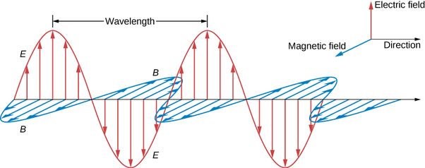
So translating these probabilities onto the page we need to preserve dimensionality, thus enter QuTip. A python package that better preserves the positions of the waves in multidimensional space, streamline the matrix multiplication and report on Hamiltonian states. It also has the ability to represent quantum circuits, qubits and chaining them together with gates.
from qutip import *
import matplotlib.pyplot as plt
import numpy as np
import scipy as scp
Let’s create our first 2 quantum objects, 2 Fock states in Hilbert space, first and second state:
state_1 = basis(2,0)
state_2 = basis(2,1)
state_1
state_2
With these states initialized we can interact between them.
state_1 - state_2
state_1 + state_2
With the dagger method .dag() we can convert ket |state_1> into bra <state_1|
state_1.dag()
and combining provides useful:
state_1 * state_1.dag()
Sigma x,y,z gives us projection operators (spin 1/2) in a Pauli matrix:
Sx = 1/2.0*sigmax()
Sx
Sy = 1/2.0*sigmay()
Sy
Sz = 1/2.0*sigmaz()
Sz
With the sesolve() function we can solve the Schrodinger equation evolution of a state vector or unitary matrix for a given Hamiltonian. Basically estimate position over time.
omega = 3
Hz = -omega*Sz
t = np.arange(0,4*np.pi/omega,0.05)
expect_ops = [Sx,Sy,Sz]
psi0 = 1/np.sqrt(2)*(state_1 + state_2)
result = sesolve(Hz, psi0, t, expect_ops)
plt.plot(t*omega/np.pi, result.expect[0])
plt.plot(t*omega/np.pi, result.expect[1]);
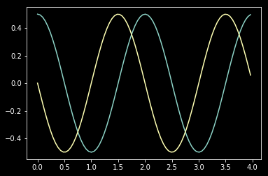
QuTip has Bloch sphere representation which is helpful for representing 3d representation
sx, sy, sz = result.expect
b = Bloch()
b.add_points([sx,sy,sz])
b.add_vectors([0,0,1])
b.show()
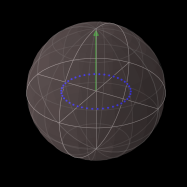
H = sigmaz() + 0.3 * sigmay()
e_ops = [sigmax(), sigmay(), sigmaz()]
times = np.linspace(0, 10, 100)
psi0 = (basis(2, 0) + basis(2, 1)).unit()
result = mesolve(H, psi0, times, [], e_ops)
b = Bloch()
b.add_vectors(expect(H.unit(), e_ops))
b.add_points(result.expect, meth='l')
b.make_sphere()
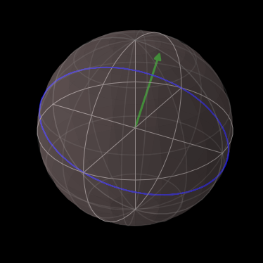
And for plotting wigner funtions:
plot_wigner(coherent(25,-2+2j)+coherent(25,2-2j));
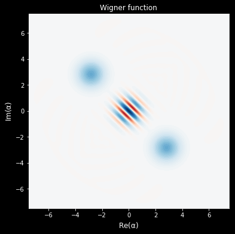
OK great but how does this stuff help us in the real world? Well now we get to quantum computing. Qubit's are the building block of quantum circuits, what will become the QPU (like CPU). In Qubit you can lay out the circuits and show how it will transform matrices.
N=2
qc = QubitCircuit(N)
# Phase shift gates
qc.add_gate("RY", 0, arg_value=np.pi/2,arg_label=r"\pi/2")
qc.add_gate("SWAP", [0,1], arg_value=np.pi/2,arg_label='swap')
bg_gates =gate_sequence_product(qc.propagators())
qc.svg
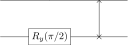
initial = tensor(basis(2,0),basis(2,0))
initial*initial.dag()
final = bg_gates*initial
final*final.dag()
Entagling Qubits is done with Hadamard gates
bellgen=QubitCircuit(2)
bellgen.add_gate("SNOT", 1)
bellgen.add_gate("CNOT", 0, 1)
bg_gates =gate_sequence_product(bellgen.propagators())
initial = tensor(basis(2,0),basis(2,0))
final = bg_gates*initial
bellgen.svg
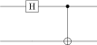
initial*initial.dag()
final*final.dag()
With these tools you can start to program in quantum algorithms, the matrix lends itself to quantum walks.
# credit https://github.com/deot95/QuantumWalks/blob/master/QRW.ipynb
## Declaration of unitary evolution operators
N = 500
psisim = (tensor(basis(2,1),basis(N,int(N/2-3))) + 1j*tensor(basis(2,0),basis(N,int(N/2-3)))).unit()
## Hadamard Operator
H = hadamard_transform(N=1)
I = qeye(N=N)
## Coin Operator
C = tensor(H,I)
## Conditional Displacement Operator
S0 = Qobj(np.zeros((N,N)))
S1 = Qobj(np.zeros((N,N)))
for i in range(N-1):
S0+= basis(N,i+1)*basis(N,i).dag()
Sd = tensor(basis(2,1)*basis(2,1).dag(),S0)
for i in range(1,N):
S1+= basis(N,i-1)*basis(N,i).dag()
Si = tensor(basis(2,0)*basis(2,0).dag(),S1)
S = Sd + Si
#quantum walk
def qw(coin,shift,psi_ini,steps):
U = (S*C)**steps
quantum = (((U*psi_ini).unit()).ptrace(1)).diag()
xq = np.arange(-1*(len(quantum)/2),len(quantum)/2)
return (xq,quantum)
#classical walk
def ucrw(steps):
x = np.arange(-(steps) , steps+1)
classic = np.zeros(2*steps+1)+(np.mod(x+steps,2)==0)*(1./(2**steps))*scp.special.binom(steps,(x+steps)/2.)
return (x,classic)
steps = 200
xq,quantum=qw(C,S,psisim,steps)
x,classic=ucrw(steps)
plt.plot(x,classic,label="Classical Random Walk",alpha=0.85)
plt.plot(xq,quantum,label="Quantum Walk",alpha=0.85)
plt.legend();
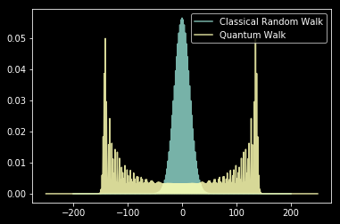
Further watching:
IBM also has free accounts for testing limited quantum circuits here